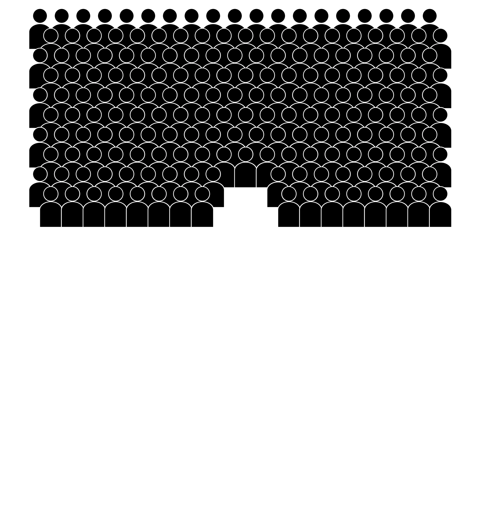
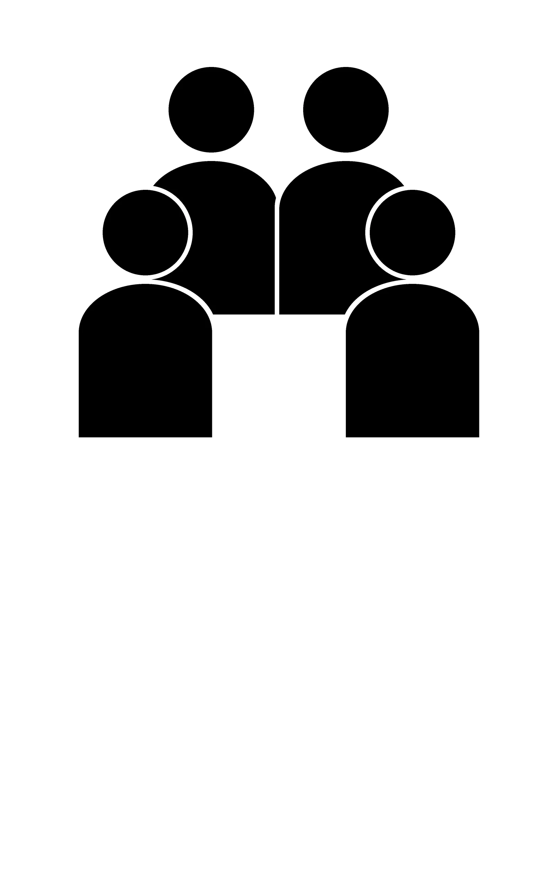
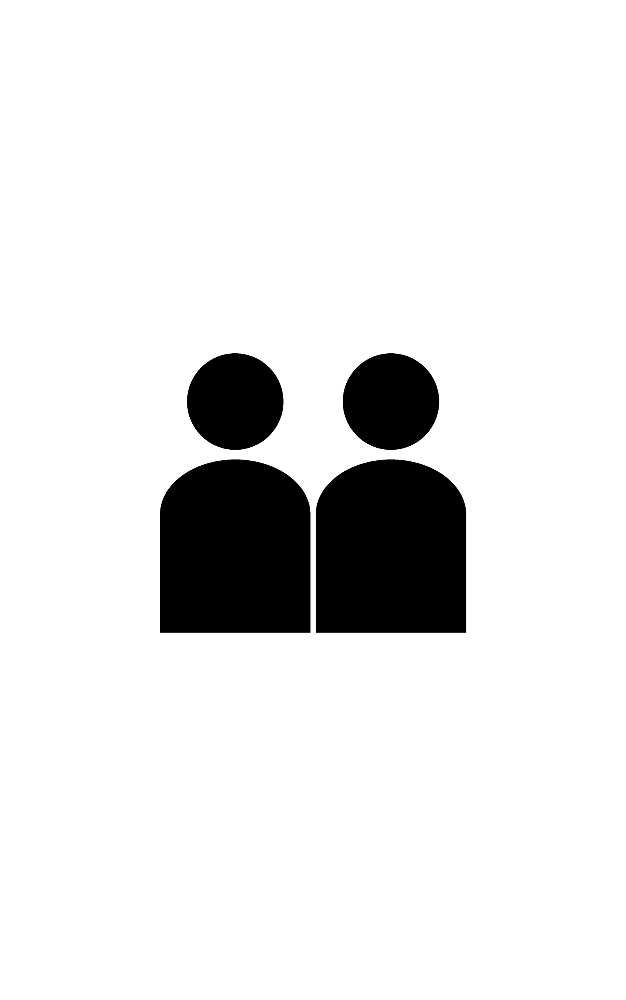
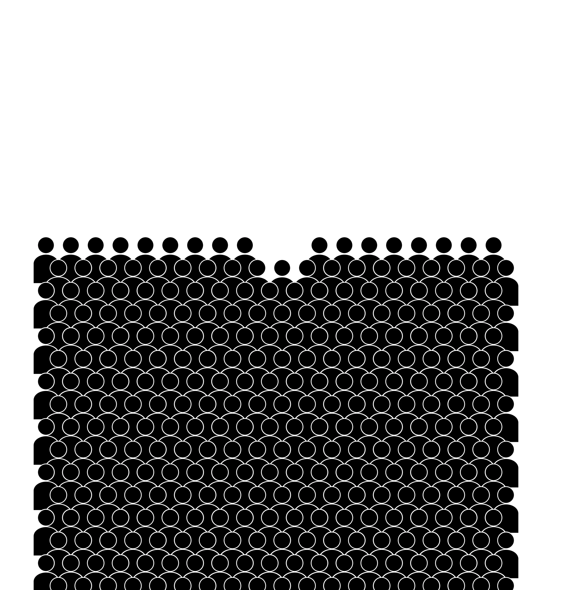
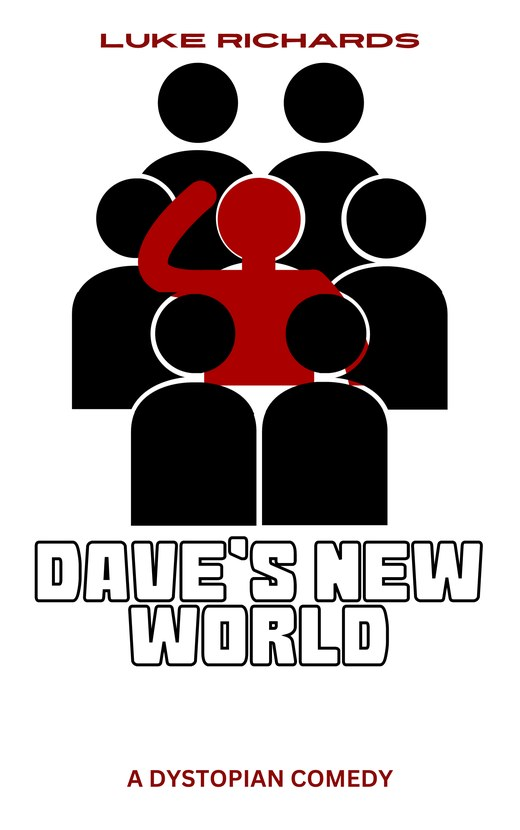

LUKE RICHARDS
DAVE’S NEWWORLD
A DYSTOPIAN COMEDY
DV-8 lives in a dystopian, totalitarian, Orwellian nightmare... and he loves it!
Then the revolution comes, and DV-8 is granted his freedom (and a new name).
He has absolutely no idea what to do with it.
Get the book

Dave’s New World
DV-8 lives in a dystopian, totalitarian, Orwellian nightmare... and he loves it! After all, when every single aspect of your life is dictated, it takes a lot of the pressure off you.
When the revolution comes and DV-8 is granted his freedom (and a new name), he finds he has absolutely no idea what to do with it. A twist on a traditional Orwellian tale.
Laugh-out-loud funny.
A fantastic premise executed really well.
Douglas Adams meets George Orwell.
The Henry Knudsen Archives
A LIFE OF(F) FILM
For his next book, Luke teamed up with obscure independent filmmaker Henry Knudsen to tell the story of Henry’s lifelong, and often frustrated, pursuit of cinematic excellence: anecdotes, interviews, script extracts and behind the scenes photographs, with extensive, lengthy and often scathing notes from producers, collaborators and colleagues.
If a man makes a film and there’s nobody there to see it... will they at least read a book about it?
Witty and has interesting insights into the world of film.Arthur Smith, comedian
Stand-up first
Luke is a comedian and author living in London. He combines his love of comedy with his overall nihilism to write comedic dystopian fiction.
- Bath New Comedian of the Year 2024
- Writing credits for BBC radio
- Dave’s New World, his first novel, 2024
Oxford Indie Book Fair
Sunday 22 November 2026, 11am to 4.30pm, Oxford Examination Schools, High Street. Free to visit.
Bring backBig Brother!
Dave’s New World by Luke Richards. A dystopian comedy.